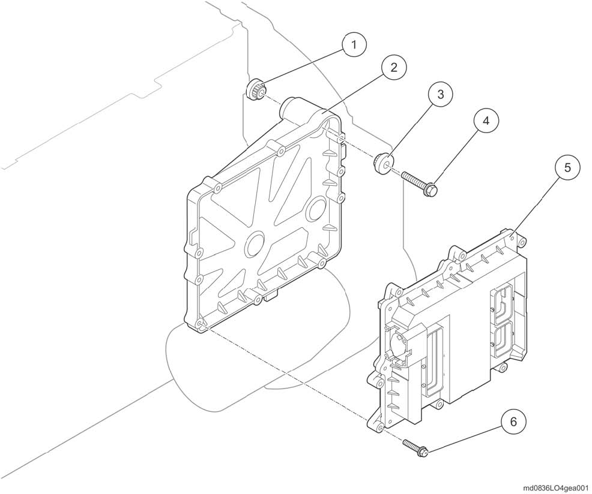
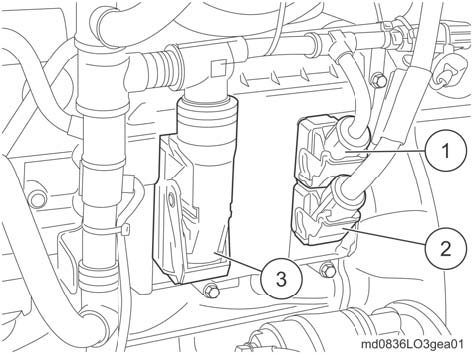
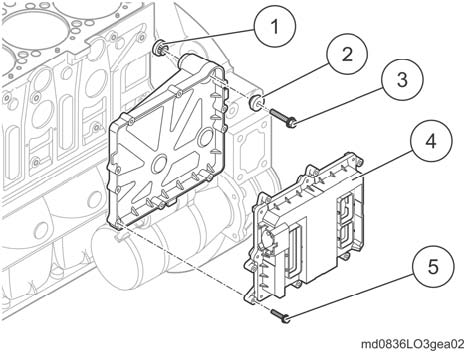
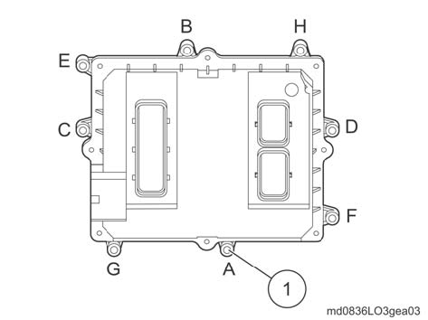

|
MÓDULO DE COMANDO DO MOTOR -EDC

|
Módulo de comando do motor - Remover e instalar

| (1) | Mancal de borracha. | (4) | Parafuso de fixação. | | (2) | Quadro de suporte. | (5) | Módulo de comando do motor. | | (3) | Mancal de borracha. | (6) | Parafuso de fixação. | |
Dados técnicos
Parafuso(4).........................................................M8x40-10.9 ......................................13 Nm(1,3 kgf.m).
Parafuso(6).........................................................M6x35-10.9 ......................................11 Nm(1,1 kgf.m).

| ATENÇÃO!
Danos severos ao sistema elétrico (curto-circuito).
• Interromper a corrente (desligar o interruptor principal da bateria) e soltar os cabos da bateria. |
|
ATENÇÃO!
Danos aos componentes por conexões parafusadas incorretamente.
• Caso parafusadeiras de impacto sejam utilizadas, estas somente podem
ser utilizadas com aperto inicial de no máx. 50% do valor do torque de
aperto indicado.
• Oaperto final deve ocorrer sempre manualmente, utilizando o torquímetro. |

|
NOTA!
Após a montagem do motor, deve-se parametrizar novamente omódulo de comando do motor e apagar a memória de falhas. |

Remoção
Desligar as conexões elétricas do módulo de comando do motor.

• Destravar totalmente os conectores(1),(2) e (3) e soltar.
• Separar os chicotes.Remover o módulo de comando do motor e o quadro de suporte.

• Remover os parafusos de fixação (5).
• Retiraromódulodecomandodomotor(4).
• Removerosparafusosdefixação(3).
• Retiraroconsolecomosrolamentosdeborracha (1) e (2).
Instalação
Sequência de aperto do módulo de comando do motor

• Seguir a sequência de aperto A até H dos parafusos de fixação (1), na seguinte etapa de trabalho.
• Montar o módulo de comando do motor e oquadro de suporte
• Encaixar os rolamentos de borracha (1) e (2) no console.
• Assentar o console.
• Prender e apertar os parafusos de fixação (3) com torque de 13 Nm (1,3 kgf.m).
• Encaixar o módulo de comando do motor(4).
• Prender os novos parafusos de fixação(5) e apertar com torque de 11 Nm
(1,1 kgf.m), conforme a sequência de aperto (ilustração anterior).
| ATENÇÃO
Perigo de danos irreparáveis ao módulo de comando do motor
• Na instalação do conector, primeiro abrir a trava totalmente, para então encaixar o conector e travar.
• Encaixar os conectores (1), (2) e (3) no módulo de comando do motor e travar.
• Instalar os chicotes e prendê-los com as abraçadeiras de cabos. |
|